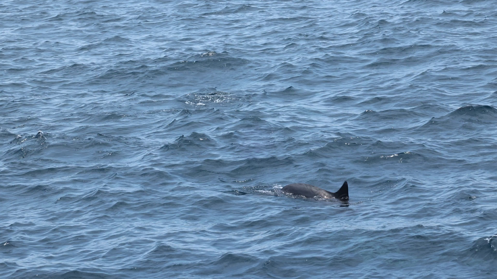

海上觀察室 / PREPARING
準備這次相遇
完整載入 4K 影片後，開始海上拍攝。

本次調查 長吻飛旋海豚Stenella longirostris
CETACEAN PHOTO-IDENTIFICATION下一次相遇，
下一次相遇，
認得出牠。
每一道背鰭，都留下不同的線索。
跟著調查影片，試著記錄海上的這一刻。
- 01觀察與拍攝瞄準背鰭，留下清楚的照片
- 02整理目擊紀錄挑選照片，記下你的觀察
- 03翻閱個體目錄比較背鰭的形狀與缺刻
教學體驗 · 照片與紀錄僅留在本次頁面，重新整理即清除
01 / 海上拍攝
移動瞄準 · 滾輪變焦 · 按住連拍
0 張
● REC
1.0×
已拍 0 張
調查航次結束
02 / 整理目擊紀錄
點照片選擇保留或刪除，再填寫本次紀錄
本次拍攝
鯨豚目擊紀錄表
CETACEAN SIGHTING RECORD
已選照片 · 張數不限
03 / 比對背鰭線索
先選照片，再點目錄放大比較；可用 ＋ / − 或雙指縮放
我的照片
尚未選擇照片
← 點選左側照片
滾輪放大縮小 · 拖曳平移
滾輪放大縮小 · 拖曳平移
教學目錄：比較背鰭線索，配對結果僅供練習，不代表已確認個體。
這次的海上觀察
教學練習紀錄 · 配對由操作者判讀，並非經驗證的科學辨識結果。
SURVEY REPORT
目擊紀錄
個體比對練習
照片篩選
Del 刪除 Enter 保留 ← → 換張 Esc 關閉
已決定的照片會自動退出待審循環
已決定的照片會自動退出待審循環
手機操作
把海面，轉寬一點。
橫向可以看見更完整的畫面。開始後會嘗試全螢幕；若手機不支援，也能使用橫向操作畫面。